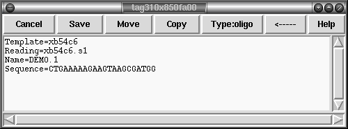
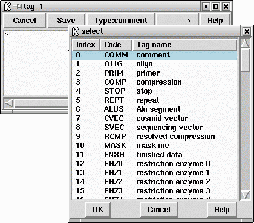
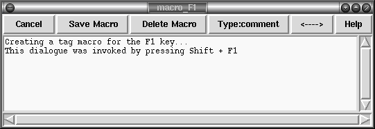

Annotations (or tags) can be placed at any position on readings or on the consensus. They are usually used to record positions of primers for walking, or to mark sites, such as repeats or compressions, that have caused problems during sequencing. They can also be used to contain feature table data as read from an EMBL format sequence file (see section Reference sequences). Each annotation has a type such as "primer", a position, a length, a strand (forward, reverse or both) and an optional comment. Each type and strand has an associated colour that will be shown on the display. For information on searching for annotations see section Search by Tag Type, and section Search by Annotation Comments.

To create an annotation, make a selection and then select "Create Tag" from the contig editor commands menu. See section The Commands Menu. This will bring up a further window; the "tag editor" (shown above). The "Type:" button at the top of the editor invokes a selectable list from which tag types can be chosen. See below.

Use this to select the desired type of annotation.
Next the strand of the annotation can be selected. This will be displayed as one of "<----->", "<-----" and "----->". The comment (the box beneath the buttons) can be edited using the usual combination of keyboard input and arrow keys. The "Save" button will exit the tag editor and create the annotation. To abandon editing without creating the annotation use the "Cancel" button.
To edit an existing annotation, position the editing cursor within a annotation and select "Edit Tag" from the commands menu. This will be a cascading menu, typically showing one tag. If multiple tags coincide at the same sequence position you will be able to chose which tag to edit. Once again the tag editor will be invoked and operates as before. The F11 key is also a shortcut for editing the top-most tag underneath the editor cursor. When editing, the "Save" will save the edited changes and "Cancel" will abandon changes.
Removing a annotation involves positioning the editing cursor within an annotation and selecting "Delete Tag" from the commands menu. As with "Edit Tag" this is a cascading menu to allow you to chose which tag at a specific point to delete.
Within a tag editor two buttons "Move" and "Copy" may be used to reposition existing tags. When editing a tag, the current location of the tag is underlined within the editor. If a new region is highlighted (on the consensus, a different reading, or even in a different contig) and either of these buttons are pressed the tag will be saved to the new location and removed from the previous location if "Move" was used. This can be used as an easy way to adjust the extents of an existing tag or as a way to annotation multiple locations with the same tag contents.
As usual, "undo" can be used to undo any of these annotation creations, edits and removals.
Some tags may contain graphical controls instead of the usual text panel. These are encoded with the master gap4 tag database (GTAGDB) by specifying the default tag text to be a piece of "ACD" code. A full description of the (modified for gap4) ACD syntax is not available currently, but it is strongly modelled on the the EMBOSS ACD syntax which has documentation at http://www.emboss.org/Acd/index.html
It is possible to add your own tag types by modifying either the system GTAGDB file or creating your own GTAGDB file in your home directory (for all your databases) or the current directory (for just those in that directory).

For rapid annotating a series of 10 macros may be programmed. Press Shift and a function key between F1 and F10 to bring up the macro editor. This look much like the normal tag editor except that Save is replaced with Save Macro and saving does not actually create a tag on the sequence. To use the macro, highlight the bases you wish and press the function key corresponding to that macro - F1 to F10. For a single base pair tag you do not need to underline a region as the tag will automatically cover the base underneath the editing cursor. To remember these permanently use the "Save Macros" option in the "Settings" menu.
You may find that some function keys are already programmed to do other things (such as raise or lower windows), depending on the windowing environment in use. If this is the case either modify the configuration of your windowing system or simply use another macro key.
For rapid editing and deleting the F11 and F12 keys may be used. These edit and delete the top-most tag underneath the editing cursor. If you wish to edit or delete the tag underneath the mouse cursor instead (and hence save a mouse click) use Shift F11 and Shift F12 for edit and delete.
The Control-Q key sequence may be used to toggle the displaying of tags. Pressing it once will prevent all tags from being displayed in the editor. This is sometimes useful to see any colouring information underneath the tag. Pressing Control-Q once more will redisplay them.